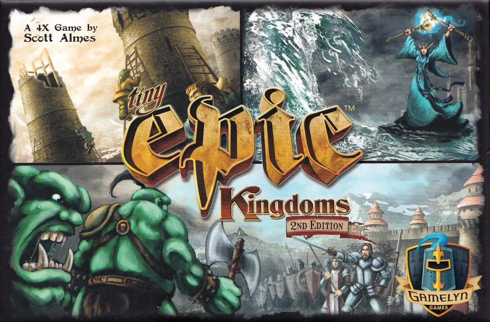

Ultra Tiny Epic Kingdoms
Setup
Solo Mode
Physical Game Setup (do this on your table first)
Factions
Difficulty Adjustments
On the Dummy's own turn, the app rolls a virtual 12-sided Compass die for you and automatically picks the resulting action (advancing clockwise past any action already taken this round, just like the physical Compass card). You still need the physical Compass card and Territory cards on the table: use the roll number the app shows you to resolve which army/region is selected for Patrol, Quest or Expand, and to read the current Day/Night war cost.
Resources, tower/magic levels and armies stay on your physical boards after this point — this assistant only tracks the round/action order, the Dummy's choices, war outcomes, and final scoring.
Round Tracker Round 1
The lead player alternates by round — the Dummy always leads odd rounds (starting with Round 1), you lead even rounds. Only 5 of the 6 actions are used per round; the round automatically clears and rotates lead once the 5th is taken. Only one action can be picked per turn: click your cube (burgundy) on your turn, then press Next Turn — the Dummy's cube (green) is chosen automatically the instant it becomes its turn.
Spins to the last Compass roll — use it for army/region resolution on the physical board.
Turn Assistant
Reacts automatically to the Round Tracker above and explains exactly what the Dummy does for the current action, including fallback rules when it's blocked.
Action costs
- Build: pay Ore = next tower level (1,2,3,4,5,6).
- Research: pay Mana = next magic level (1,2,3,4,5).
- Expand: pay Food = your new total army count. New army placed with an existing solitary army.
- Trade: convert any amount of one resource into an equal amount of another, once per action.
- Collect: 1 resource per occupied region (Forest→Mana, Mountain→Ore, Plains→Food, Ruins→choice); Capital Cities give none.
- Resource maximum is 9 of each type.
Compass Card reference
The Compass ring is the same on both sides — only the war cost and region-selection distance preference change between Day and Night. Each number pairs with its opposite (N and N+6) on the same action:
- 1 & 7 — Research
- 2 & 8 — Trade
- 3 & 9 — Build
- 4 & 10 — Patrol
- 5 & 11 — Quest
- 6 & 12 — Expand
Each time the round clears (the Action card is cleared, its 5th action taken), the Compass flips: Day → Night grants the Dummy 1 Ore, 1 Mana and 1 Food; Night → Day grants nothing. During the Day the Dummy prefers the region/army closer to the Compass card; at Night it prefers whichever is farther away — this part stays physical since it depends on your actual table layout.
Dummy Player Overview
- Dummy takes the very first turn of the game, always selecting Patrol.
- On your turn: Dummy follows your action if able, else collects resources (exception: never follows Trade — does nothing).
- On Dummy's own turn: it picks the available action closest to the top of the action card (Patrol > Quest > Build > Research > Expand); it will never select Trade itself.
- Dummy never uses Research faction abilities, except any level-5 bonus VP at scoring.
- Dummy always keeps 2 armies in its Home Region; a new army is added free the moment only 1 remains there.
- On the Dummy's own turn, the app rolls a virtual 12-sided Compass die and automatically selects the resulting action, advancing clockwise past any action already taken this round — see the Compass Card reference above for the number/action pairing.
- That same roll also picks which army moves for Patrol/Quest/Expand — starting at the rolled number, move clockwise around the territory until you reach a valid army/region. When the Dummy is just following your action instead, the app rolls once for this purpose too.
- The Dummy never moves into a region it already occupies, but will move into one of yours (triggering war).
- On your turn: Dummy follows your action if able, else collects resources — except Trade, which it always "follows" by simply gaining 1 of each resource.
- The Dummy benefits from its faction's abilities according to its magic level, same as a normal player.
- When the Dummy collects from a Ruin, either give it the resource it currently has least of, or roll a die (1–4 Ore, 5–8 Mana, 9–12 Food) — pick one method and stick with it.
- The app automatically flips the Compass between Day and Night each time the round clears; check the 🧭 pill above the action chips for the current phase.
Scoring & end game
- End triggers (either player): all 7 armies in play, 6th Tower level reached, or 5th Magic level reached. If the Dummy triggers it on the round's 5th action, play one more full round.
- VP: 1 per army in play (not in Ruins) + Tower VP + Magic VP (+top level bonus) + Capital Cities (2 solo / 1 shared each) + 1 per army on the opponent's territory card.
- End triggers (either player): all 7 armies in play, 6th Tower level reached, or 5th Magic level reached. Once triggered, the game ends the next time the action card is next cleared, no matter what.
- VP: 1 per army in play (not in Ruins) + Tower VP + Magic VP (+top level bonus) + 2 per Capital City occupied. No allied/shared capital control in this mode.
- Tie-break order: most armies in play, then tower level, then magic level, then total resources. Still tied → the game ends in a tie.
War Resolver
You always choose your own war value in secret (0–11, or the White Flag). The Dummy never chooses — roll a 12-sided combat die for it: rolling a 12 is the White Flag; any other face is a value of 1–11. The Dummy's real committed value is always the lower of that die roll or the total Mana + Ore it currently has available (Mana counts as 2, Ore as 1) — it spends Mana before Ore, an exact amount if possible.
Check the Compass card: on the Day side, the Dummy's war cost is 2 × its total armies currently in play; on the Night side, its war cost equals its total armies currently in play. You only need to meet or exceed this cost to win the war — if you choose not to pay it, you lose.
- The Dummy never has a White Flag or alliance option in this mode — every war has a winner.
- Win/tie resolution and your own retreat-or-removal follow the standard rules.
- If the Dummy loses, it retreats into an adjacent empty region if one exists (roll a die among tied options, and use the Compass to determine the retreat direction) and pays food equal to its total armies in play; if it can't afford that food, the losing army is removed instead. It will never retreat into a region with your army or one of its own armies already in it.